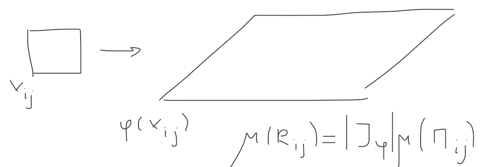

Лемма: \(G \subset \mathbf{R}^n\) замкнута, ограничена и выпукла. \(\varphi: G \to \mathbf{R}^n, \,\,\,\, \varphi \in C^1(G)\).
Тогда \(\frac{||\varphi(x + \Delta x) - \varphi(x) - J_{\varphi}\Delta x||}{||\Delta x||} \overset{G}{\rightrightarrows} 0\), при \(||\Delta x|| \to 0\)
(лемма о том, что матрица Якоби – это линейная часть первого дифференциала)
Доказательство:
\(\varphi(x) = \left(\begin{array}{c} \varphi_1 \\ \ldots \\ \varphi_n \end{array}\right)\) \[||\varphi(x + \Delta x) - \varphi(x) - J_{\varphi}\Delta x|| = \sqrt{\displaystyle \sum_{i = 1}^{n}(\ldots)^2} \leqslant \displaystyle \sum_{i = 1}^{n}|\varphi_i(x + \Delta x) - \varphi_i(x) - (\operatorname{grad}\varphi_i(x), \Delta x)| =\]
по предыдущей лемме:
\[=\displaystyle \sum_{i = 1}^{n}|(\operatorname{grad}\varphi_i(x + \theta_i\Delta x) - \operatorname{grad}\varphi_i(x), \Delta x)| \leqslant ||\Delta x||\cdot \displaystyle \sum_{i = 1}^{n}||\operatorname{grad} \varphi_i(x + \theta_i \Delta x) - \operatorname{grad} \varphi_i(x)|| \rightrightarrows 0\]
Стремится к нулю, так как функция непрерывная и частные производные непрерывны, а равномерно, так как на компакте каждая из координатных функций равномерно непрерывна \(\,\,\,\,\blacksquare\)
Замечание: Переформулировка этого утверждения, но более удобная. \[\exists \alpha(t) \geqslant 0, \,\,\,\, t \to 0: \,\,\,\,||\varphi(x + \Delta x )\cdot \varphi(x) - J_{\varphi}\Delta x|| \leqslant \alpha(||\Delta x||)\cdot ||\Delta x|| \,\,\,\,\blacksquare\]
Теорема: \(G \subset \mathbf{R}^n\) замкнута, ограничена и выпукла. \(\varphi: G \to \mathbf{R}^n, \,\,\,\, \varphi \in C^1(G)\) и \(\mu(\partial G) = 0\), \(\varphi(G) = \Omega\). Тогда \(\mu(\partial \Omega) = 0\) и \(\mu(\Omega) \leqslant \displaystyle\iint_{G}|J_{\varphi}|\cdot dx_1\ldots dx_n\)
Доказательство:
Доказываем на плоскости.
Пусть \(\{\Pi_{ij}\}\) – квадраты на \(\mathbf{R}^2\) со стороной \(h\) (можем взять какие угодно, так как все существует).
\(J = \{(i, j)|\,\,\,\, \Pi_{ij}\cap \partial G \ne \varnothing\}\) и (внутренние) \(I = \{(i, j)| \,\,\,\, \Pi_{ij} \subset G\}\).
\(\forall \varepsilon > 0 \,\,\,\, \exists \delta > 0 \,\,\,\, \forall h < \delta \,\,\,\, \displaystyle \sum_{J}\mu(\Pi_{ij}) = \sum_{J}h^2 < \varepsilon\) (накрыли границу с площадью ноль маленькими квадратиками)
Пусть \(c > 0\) константа из леммы.
\(\mu(\varphi(\Pi_{ij})) \leqslant \pi\frac{h^2c^2}{2}\) и \(\displaystyle \sum_{J}\mu(\varphi(\Pi_{ij})) \leqslant \displaystyle \sum_{J}\pi\frac{h^2c^2}{2} < \pi\cdot \frac{c^2}2\cdot \varepsilon\)
(круг такой, что образ точно влезет)
\(\partial \Omega \leqslant \varphi(\partial G) \implies \mu(\partial \Omega) < \pi\cdot \frac{c^2}2\cdot \varepsilon \implies \mu(\partial \Omega) = 0 \,\,\,\,\blacksquare\)
Докажем про интеграл:
Пусть \(x_{ij}\) – левый нижний угол квадратика \(\Pi_{ij}\). (Слова несколько хромают относительно высшего разума, но я думаю мы преодолеем некоторую неловкость (c) Подольский)
Пусть множество приращений \(\{\Delta x\}\), таково, что \(\forall x \in \Pi_{ij} \,\,\,\, \exists \Delta x: \,\,\,\, x_{ij} + \Delta x = x\).
Пусть \(R_{ij} = \varphi(x_{ij}) + J_{\varphi}\Delta x\) (Якобиан в точке \(x_{ij}\))

\(||\varphi(x_{ij} + \Delta x) - \varphi(x_{ij}) - J_{\varphi}\Delta x|| \leqslant \alpha(\sqrt{2}h)\cdot \sqrt{2}h\)
(\(-\varphi(x_{ij}) - J_{\varphi}\Delta x = -(\varphi(x_{ij}) + J_{\varphi}\Delta x)\), то есть из точного образа вычитаем параллелограм)
\(\Omega_{ij} = \varphi(\Pi_{ij})\).
Берем \(\mu(\Omega_{ij}) \leqslant \mu(R_{ij}) + 4\cdot c\cdot h\cdot \alpha(\sqrt{2}h)\sqrt{2}h + \pi \cdot \alpha^2(\sqrt{2}h)\cdot 2h^2 \leqslant \mu(R_{ij}) + C_1\cdot \alpha(\sqrt{2}h)\cdot h^2 = |J_{\varphi}|\cdot h^2 + C_1\cdot \alpha(\sqrt{2}h)\cdot h^2\) (4 площади приклееных прямоугольников и площадь секторов, которые круг)
Складываем по \(i, j\) и переходим к пределу:
\(\displaystyle \sum \mu(\Omega_{ij}) \leqslant \displaystyle \sum |J_{\varphi}|h^2 + C_1\cdot \alpha(\sqrt{2}h)\cdot \displaystyle \sum h^2\)
\(\mu(\Omega) \leqslant \iint_G |J_{\varphi}|dxdy + 0 \,\,\,\,\blacksquare\)
Замечание: Выпуклость можно убрать, нужно только существование площади границы.
Теорема: Если в условиях предыдущей теоремы (без выпуклости) \(|J_{\varphi}| \geqslant \delta > 0\), то \(\mu(\Omega) = \displaystyle\underbrace{\int\ldots \int}_{G}|J_{\varphi}|dx_1\ldots dx_n\)
Доказательство:
\(\mu(\Omega) \leqslant \displaystyle\underbrace{\int\ldots \int}_{G}|J_{\varphi}|dx_1\ldots dx_n\) по доказанному.
Пусть \(G = \{G_k\}, \,\,\,\, \Omega = \{\Omega_k\}, \,\,\,\, \Omega_k \subset \varphi(G_k)\)
Заметим, что \(\displaystyle\underbrace{\int\ldots \int}_{G}|J_{\varphi}|dx_1\ldots dx_n = \displaystyle\sup_{\{G_k\}}s\)
Рассмотрим \(\varphi^{-1}: \Omega \to G\) (это по теореме о неявном отображении)
Перейдем от образов к прообразам (\(M_{k, \varphi^{-1}}\) – максимум Якобиана, \(m^{-1}_{k, \varphi}\) – минимум Якобиана \(J_{\varphi}\)):
\(\mu(G_k) = \displaystyle\underbrace{\int\ldots \int}_{\Omega_k}|J_{\varphi^{-1}}|dy_1\ldots dy_n \leqslant M_{k, \varphi^{-1}}\cdot \mu(\Omega_k) = m^{-1}_{k, \varphi}\mu(\Omega_k)\)
\(\mu(\Omega_k) \geqslant m_{k, \varphi}\mu(G_k)\)
Складываем:
\(\mu(\Omega) \geqslant s(\displaystyle\cup G_k)\) переходим к супремуму: \(\mu(\Omega) \geqslant \displaystyle\underbrace{\int\ldots \int}_{G}|J_{\varphi}|dx_1\ldots dx_n \,\,\,\,\blacksquare\)